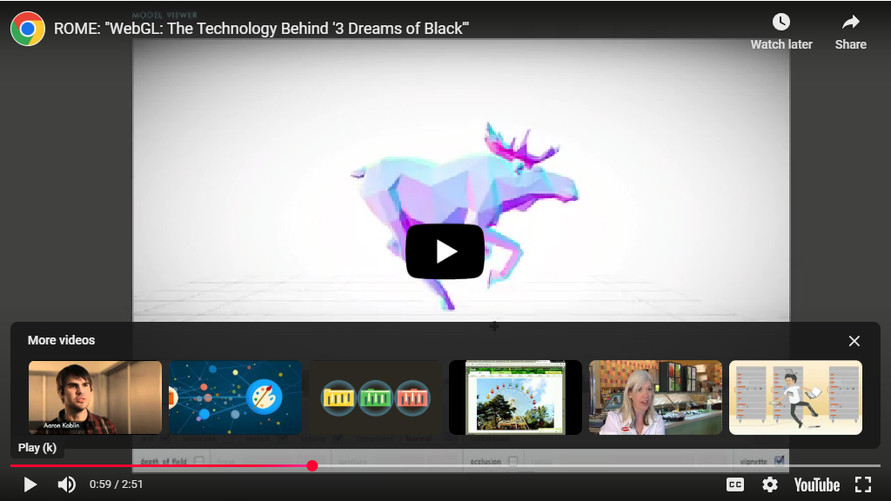

First impression is an opening scene where the person climbs onto the train which sets the tone of the experience. It feels cinematic yet interactive and shows how WebGL can blend story with graphics.
Second impression explores the “Moose in Motion” model in the creator which shows how WebGL can handle real-time animation. The moving figure gives a sense of life and highlights how assets and motion data are streamed directly into the browser.
Technology: RO.ME was built in 2011 as a Google Creative Lab project with Chris Milk. It uses WebGL for 3D rendering, Three.js as the library backbone, Blender for asset export, and was released open source on Google App Engine.
Comparison: Unlike simple graphics demos such as a static cube, RO.ME combines story, music, and interactivity. The “Moose in Motion” model shows animation and movement streamed live in the browser, something far beyond a basic shape.
Significance (AI): Using ChatGPT helped me organize the Technology section and write clear reflections about what I saw on the site. It also reminded me to only change the TODO sections, not the professor’s starter code.